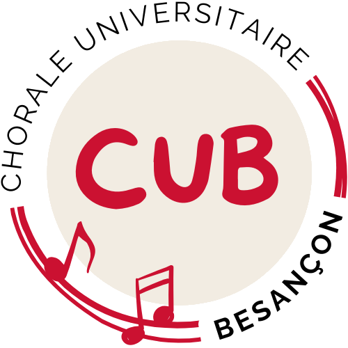

<div class="w3-top">
    <div class="w3-bar" id="myNavbar">
        <a class="w3-bar-item w3-button w3-hover-light-blue w3-hide-medium w3-hide-large w3-right" href="javascript:void(0);"
            onclick="toggleFunction()" title="Toggle Navigation Menu">
            <i class="fa fa-bars"></i>
        </a>
        <!-- le logo de la cub qui renvoie vers la page d'accueil-->
        <a href="index.html#home" class="w3-bar-item w3-button w3-hover-light-blue">
            
        </a>
        <a href="actuality.html" class="w3-bar-item w3-button w3-hide-small w3-hover-light-blue"> Notre
            Actualité</a>

        <div class="w3-dropdown-hover w3-hide-small">
            <button class="w3-button w3-hover-light-blue">La chorale universitaire</button>
            <div class="w3-dropdown-content w3-card">
                <a href="index.html#about" class="w3-bar-item w3-button w3-hover-light-blue">Rejoins la CUB !</a>
                <a href="les_choeurs.html" class="w3-bar-item w3-button w3-hover-light-blue">3 chœurs</a>
                <a href="tremplin_ecriture.html" class="w3-bar-item w3-button w3-hover-light-blue">Le tremplin d'écriture</a>
                <a href="l_association.html" class="w3-bar-item w3-button w3-hover-light-blue">L'association</a>
            </div>
        </div>
        <a href="index.html#concert" class="w3-bar-item w3-button w3-hide-small w3-hover-light-blue">Nos
            Photos</a>
        <a href="index.html#partenaires" class="w3-bar-item w3-button w3-hide-small w3-hover-light-blue">Nos
            Partenaires</a>
        <a href="index.html#contact" class="w3-bar-item w3-button w3-hide-small w3-hover-light-blue">
            Contacts</a>
        <a href="calendar.html" class="w3-bar-item w3-button w3-hide-small w3-hover-light-blue">
            Agenda</a>
    </div>

<!-- Navbar on small screens -->
<div id="navDemo" class="w3-bar-block w3-white w3-hide w3-hide-large w3-hide-medium">
        <a href="actuality.html" class="w3-bar-item w3-button w3-hover-light-blue" onclick="toggleFunction()">Notre Actualité</a>
        <div class="w3-dropdown-hover w3-mobile">
            <button class="w3-button w3-hover-light-blue">La chorale universitaire</button>
            <div class="w3-dropdown-content w3-card-4">
                <a href="index.html#about" class="w3-bar-item w3-button w3-hover-light-blue">Rejoins la CUB !</a>
                <a href="les_choeurs.html" class="w3-bar-item w3-button w3-hover-light-blue">3 chœurs</a>
                <a href="tremplin_ecriture.html" class="w3-bar-item w3-button w3-hover-light-blue">Le tremplin d'écriture</a>
                <a href="l_association.html" class="w3-bar-item w3-button w3-hover-light-blue">L'association</a>
            </div>
        </div>
        <a href="index.html#concert" class="w3-bar-item w3-button w3-hover-light-blue">Nos Photos</a>
        <a href="index.html#partenaires" class="w3-bar-item w3-button w3-hover-light-blue">Nos Partenaires</a>
        <a href="index.html#contact" class="w3-bar-item w3-button w3-hover-light-blue">Contacts</a>
        <a href="calendar.html" class="w3-bar-item w3-button w3-hover-light-blue">Agenda</a>
    </div>
</div>